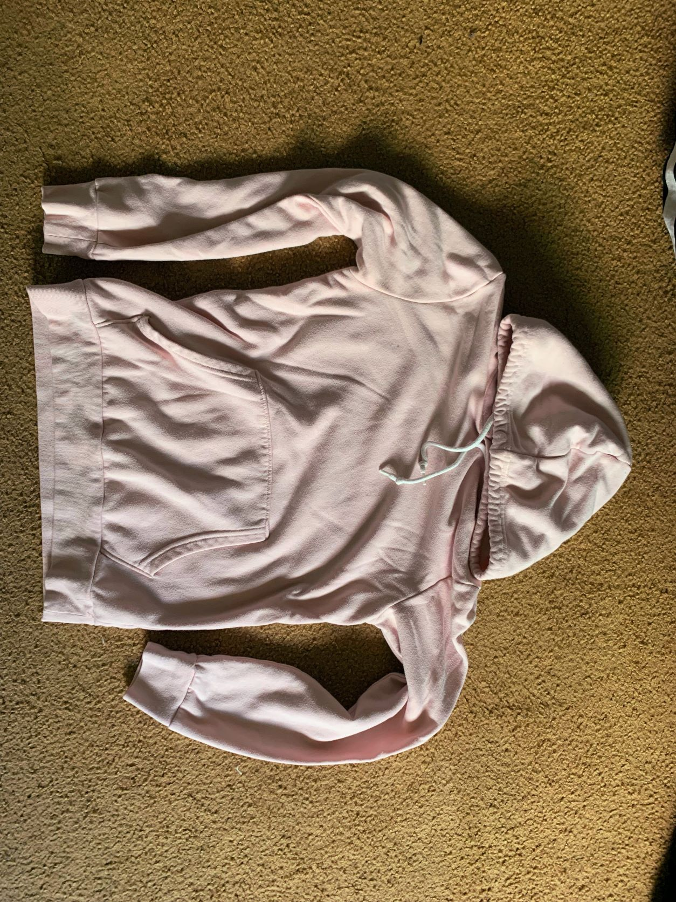
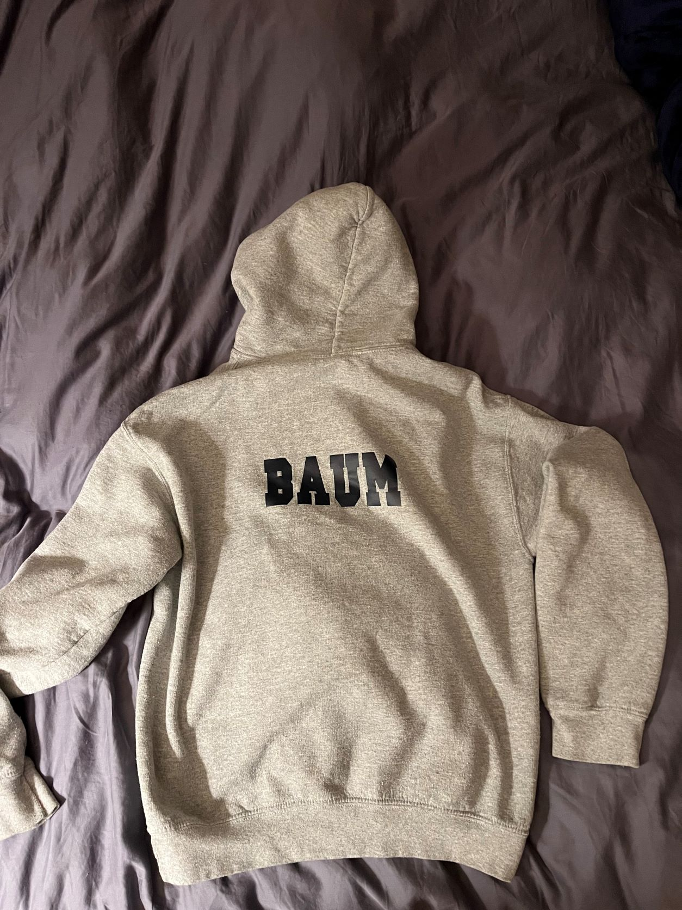
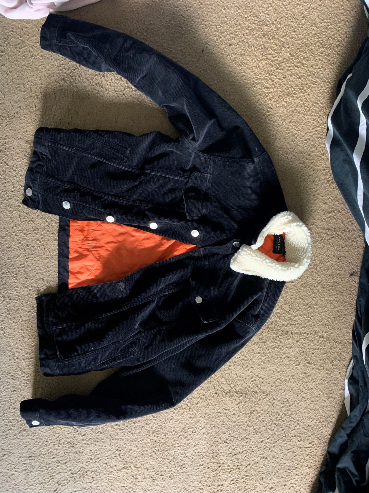
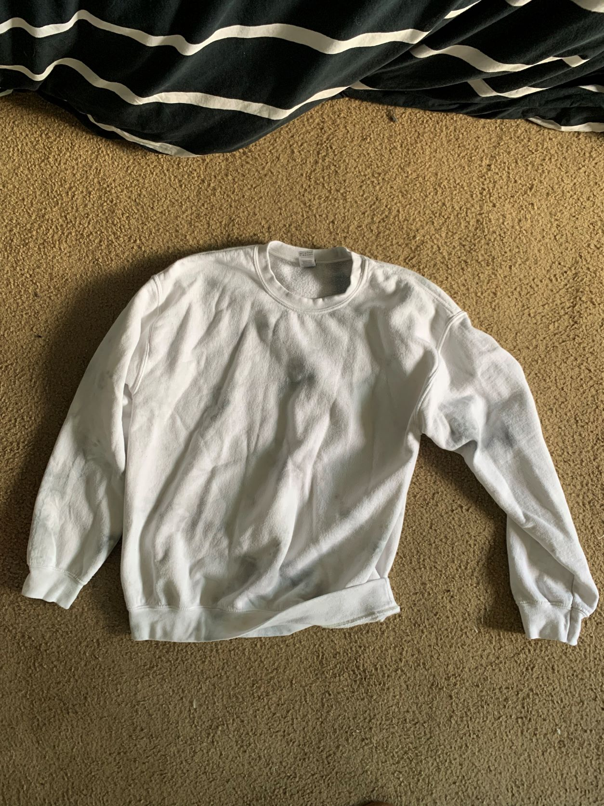
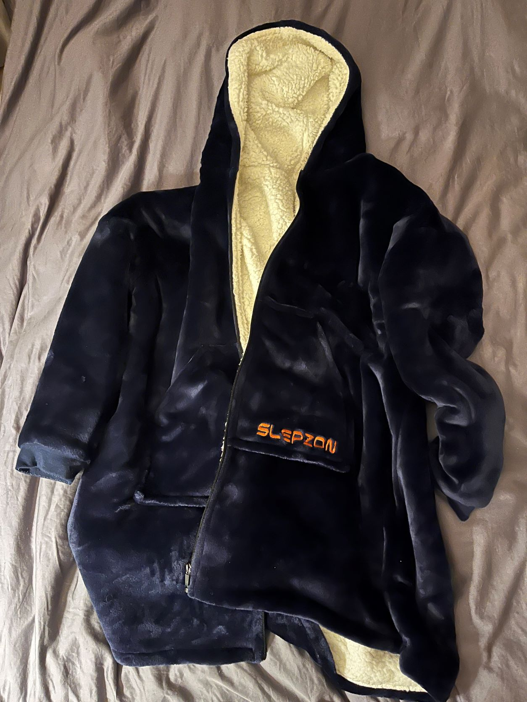
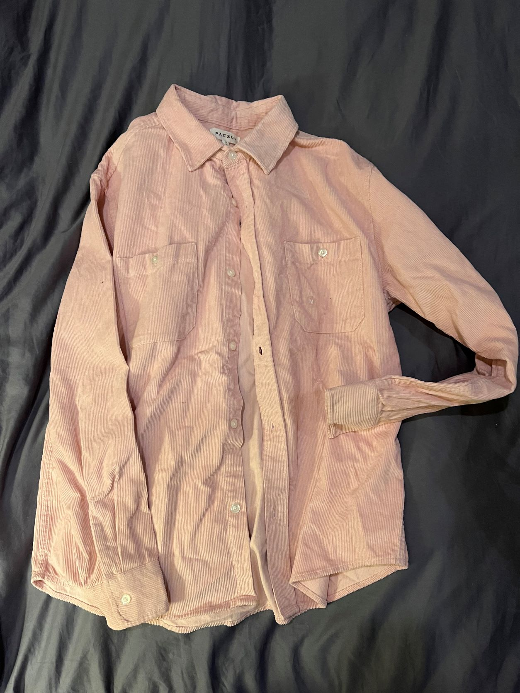
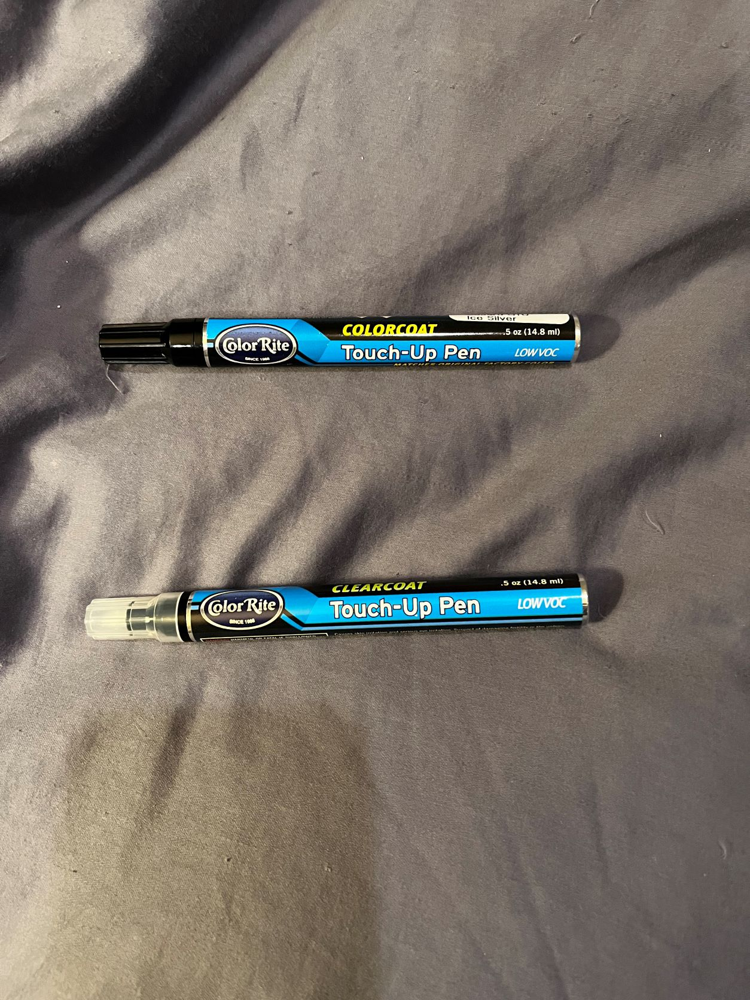
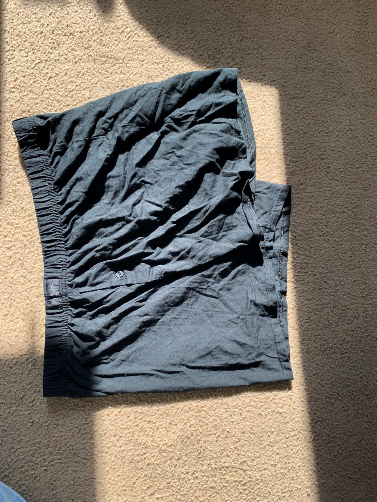
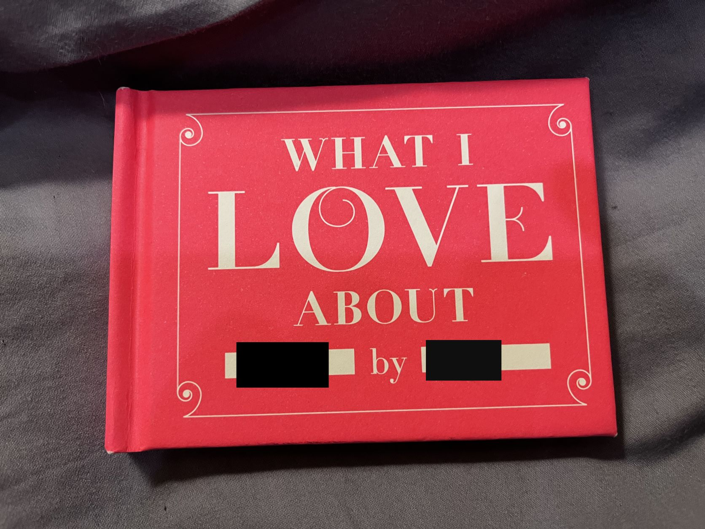

Some love artifacts ...
An archaelogical exploration of a past relationship [circa 2016-2021]
-
A pink hoodie. Mine but something she liked to wear, perhaps because of the color.

-
My track hoodie from high school which I forgot she had.
It was returned to me once things were over. I don't want it either anymore.

-
A jacket given to me from her as a gift. I used to wear it though I never really liked it.
Something about blue and orange makes me feel like a litte kid. I hate things that make me feel small.

-
A tie dye crewneck. My sister, her, and I made them together.
It always fit a litte small and felt scratchy. But I wore it anyways, because she liked it.

-
A very comfortable robe / snuggie look-alike. It was a gift. For a time, I loved wearing it.
It's soft and warm, I guess it feels like home.
But I always felt lazy when wearing it and it gave me subtle allergies.

-
A much too large velvet button up. I was glad it didn't fit. I do like the color though,
her favorite color. I guess it was my favorite color for some time as well.
Not because I was inately drawn to pink but because I was drawn to her favorite things.

-
Touch-up paint for a silver subaru crosstrek.
For a time she lived on a steep street. My car is stickshift and I'm shit at parallel parking.
Consequently, I sideswiped her step-dad's subaru one night while parking. I bought the paint to fix it.
But he never cared about the scratch and I've never been one to fulfill my obligations.

-
Unused XXL Boxers, accidentally bought when visiting her.
It was a funny mispurchase. Why didn't I check the size?
I tried to leave them with her and I was almost successful having stuffed them secretly in a drawer.
But she found them and was not as amused as I was. The next trip to me, she gave them back.
We never really kept eachother's things, perhaps an unspoken contigency plan.

-
A book filled with thoughts about love given to me on the final anniversary of the relationship.
I kept it by my bedside for a long time. When I read it, I felt like I mattered.
Eventually I forgot it was there.
Some 2 or 3 weeks after I broke up with her,
I found it again on my bedside table covered with KN-95 masks.
It was like accidentally resting on a hot stove.
Reading through the book surfaced a deep pain that I had earned.
I don't think I will enjoy looking back and reading this text anytime soon.
For now, it just makes me feel like an asshole.
